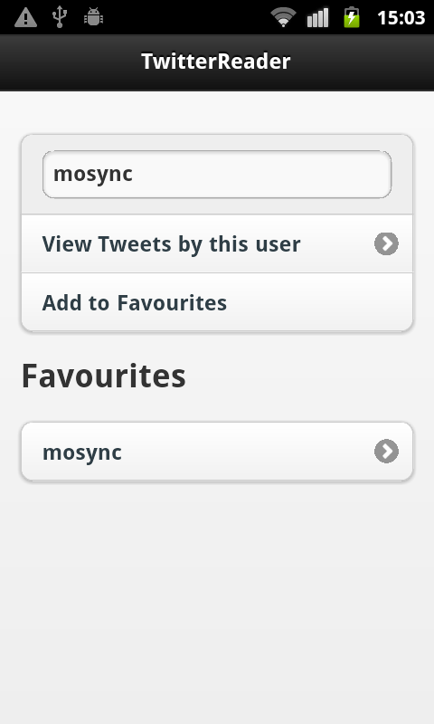
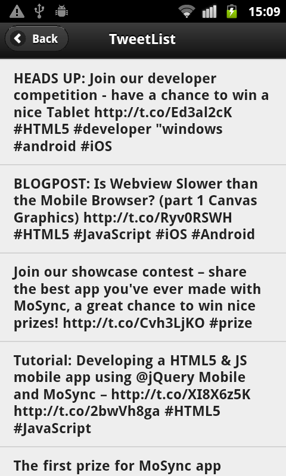

The WebViewTwitter example application is a Twitter client that displays tweets of selected users. Users can be added to a favorites list, which is stored on the device. The app uses the jQuery and jQuery Mobile JavaScript libraries, and the MoSync Wormhole C++ library.
|  |  |
| First screen (Android) | Second screen (Android) |
This example is included in the MoSync SDK installation in the /examples folder. For information on importing the examples into your workspace, see Importing the Examples.
When started, the example application displays the main application screen. On this screen you can enter the username of a Twitter user. When tapping the button View Tweets by this user, a second screen is displayed showing that user's recent tweets. Tapping the Back button goes back to first screen. On Android you can also use the hardware back key to go back. On the main screen you also can add the username to a Favourites List. You can then tap on an entry in the Favourites List to view that user's tweets.
You can browse the source code of the application online in the MoSync GitHub repository.
The following technologies are used in this application:
Included in the example is a set of wrapper functions for accessing the MoSync File API from Javascript. This library is meant to illustrate how to extend a hybrid app with custom C++ functionality. If you prefer, you can use the PhoneGap File API, rather than the File API included in the example.
WebViewTwitter.cpp is the main file of the app. The implementation extends class HybridMoblet. The example application uses a custom message handling function to process and respond to messages coming from JavaScript.
All of the HTML5 and JavaScript-related files and libraries are located in the LocalFiles directory, and are bundled with the application and extracted to the local file system of the device the first time the application launches
The Resources.lst file has an entry for the bundled files that must be the first entry in the resource file. Do not move this resource entry if you should add your own resources.